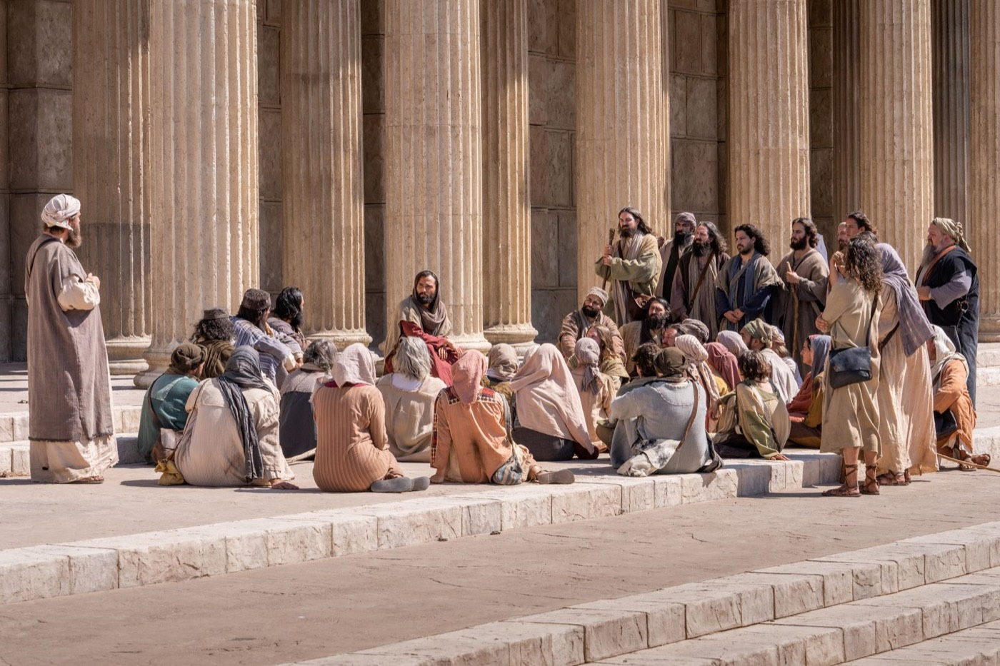
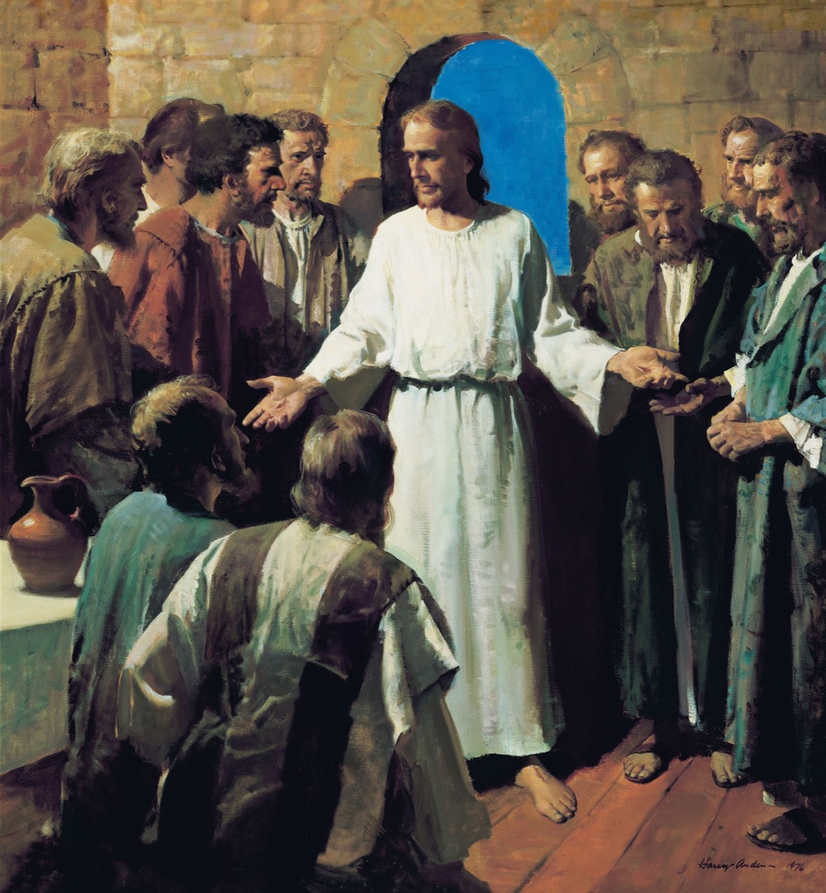
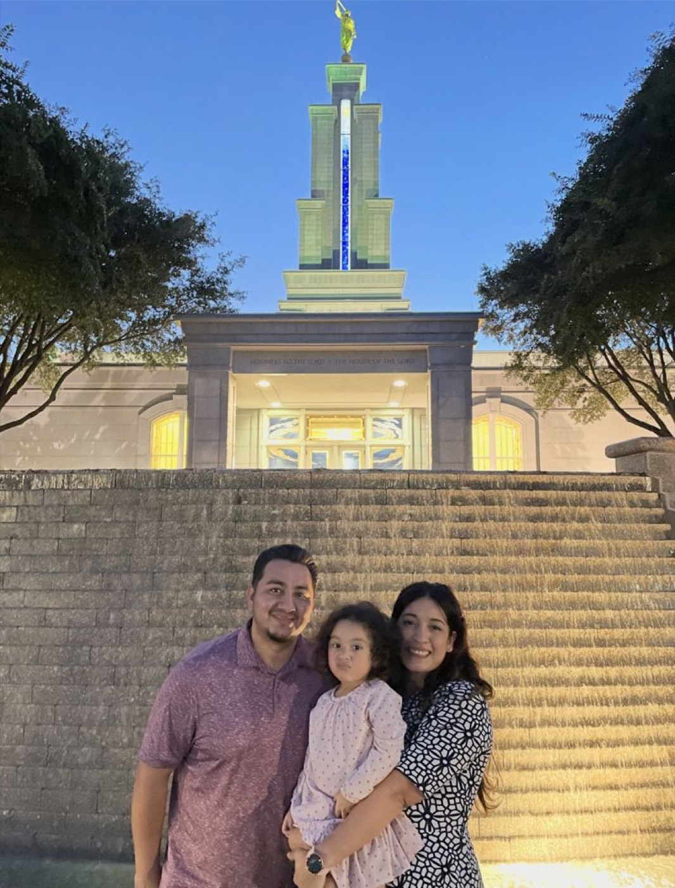
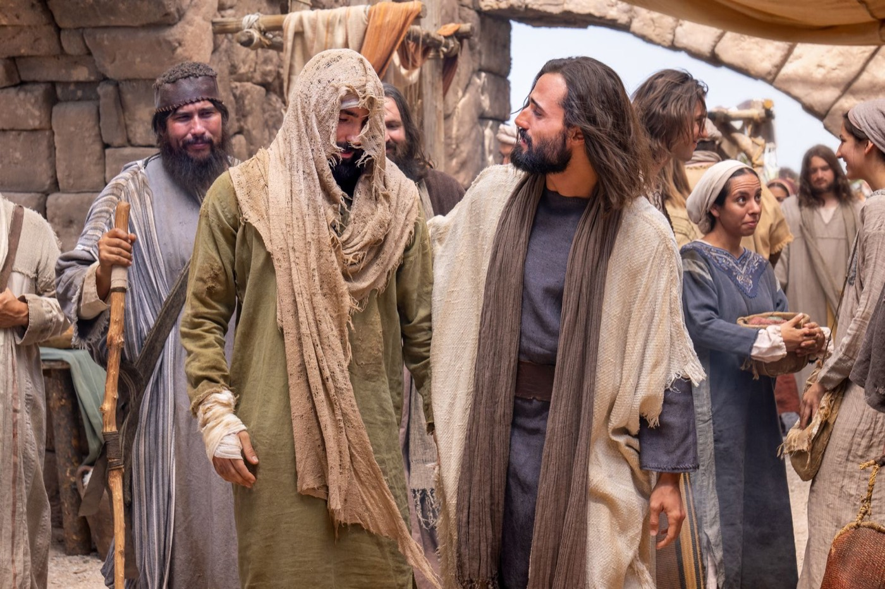
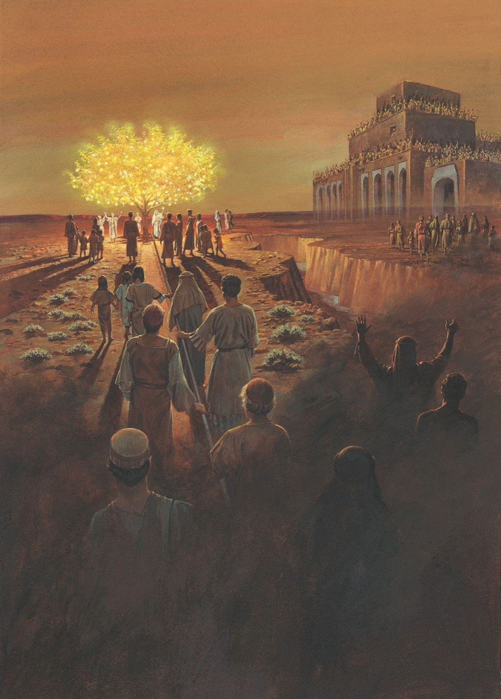
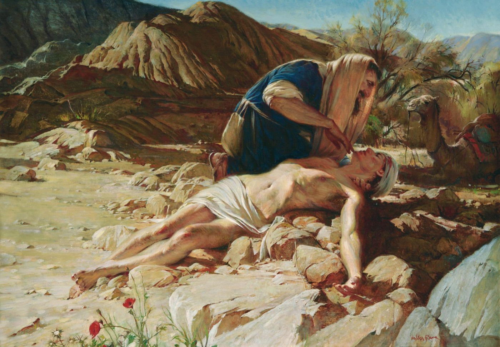
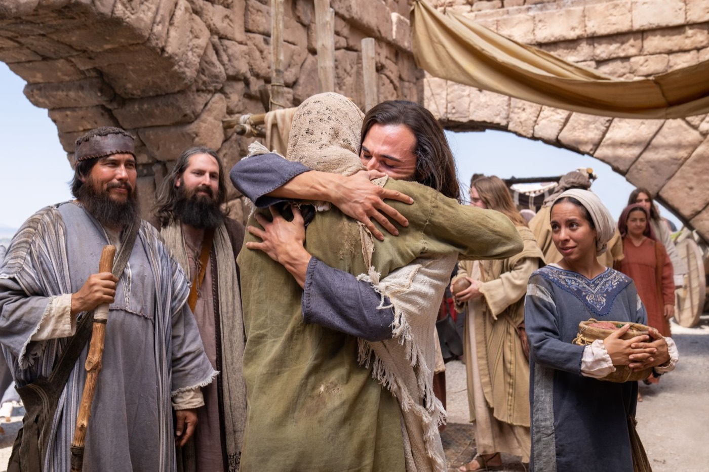
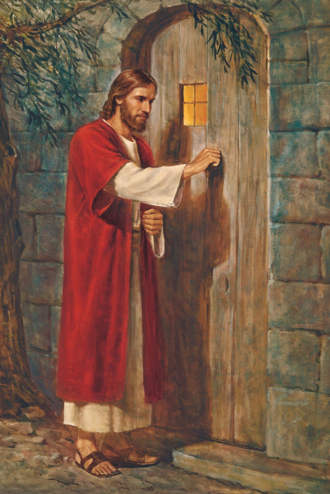
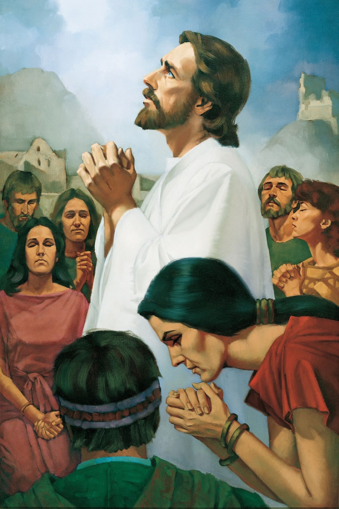
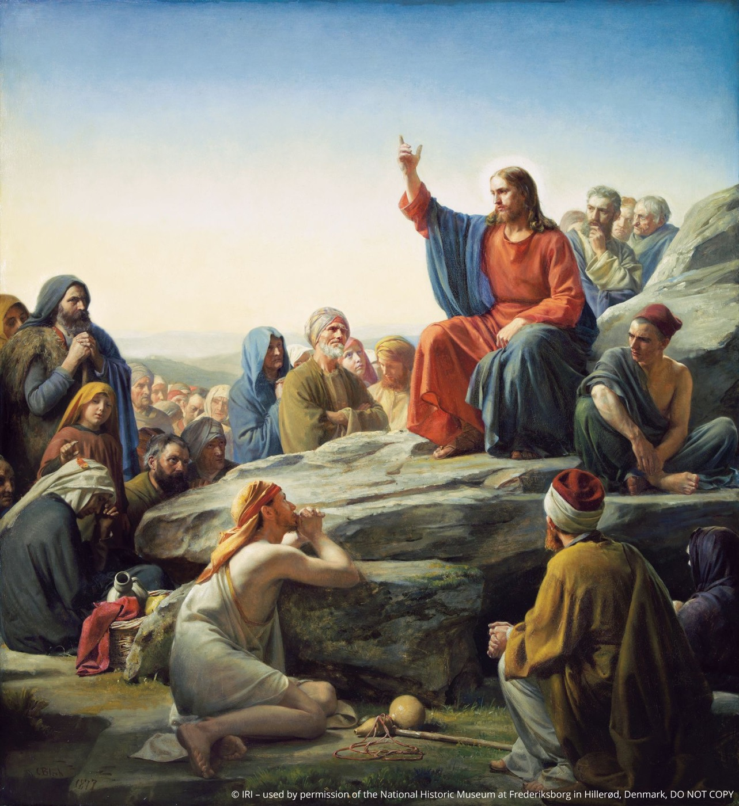

President Oaks declared that the journey home starts by reanchoring on the Savior. Only Jesus Christ can fully restore that light and joy into your life. We all struggle. We need patience, service, and love from others.Elder Clark G. Gilbert · “Come Home,” ¶22


12And they that shall be of thee shall build the old waste places: thou shalt raise up the foundations of many generations; and thou shalt be called, The repairer of the breach, The restorer of paths to dwell in.
Because of our covenant with God, He will never tire in His efforts to help us, and we will never exhaust His merciful patience with us.
And “should [we] stray, He will help [us] find [our] way back.”President Russell M. Nelson · “Come Home,” ¶10
You don't have to be perfect to be in this Church. You just have to do your best, and Christ will make up the difference.Elder Gilbert, to Luis — on the steps of the San Antonio Temple


“Come to church with us.”
“We have a really great ward.”
“There's an activity Thursday.”
“There's something that carried me through the worst year of my life.”
“You don't have to be fixed first.”
“I know Someone who knows exactly what this feels like.”

11And it came to pass that I did go forth and partake of the fruit thereof; and I beheld that it was most sweet, above all that I ever before tasted. Yea, and I beheld that the fruit thereof was white, to exceed all the whiteness that I had ever seen.
12And as I partook of the fruit thereof it filled my soul with exceedingly great joy; wherefore, I began to be desirous that my family should partake of it also; for I knew that it was desirable above all other fruit.



I have repeatedly witnessed people finding their way home. It may not always have come quickly, but it happened—over and over again.Elder Clark G. Gilbert

7Have ye any that are sick among you? Bring them hither. Have ye any that are lame, or blind, or halt, or maimed, or leprous, or that are withered, or that are deaf, or that are afflicted in any manner? Bring them hither and I will heal them, for I have compassion upon you; my bowels are filled with mercy.
9And it came to pass that when he had thus spoken, all the multitude, with one accord, did go forth with their sick and their afflicted, and their lame, and with their blind, and with their dumb, and with all them that were afflicted in any manner; and he did heal them every one as they were brought forth unto him.
13Wherefore, I the Lord ask you this question — unto what were ye ordained?
14To preach my gospel by the Spirit, even the Comforter which was sent forth to teach the truth.
1And now I, Nephi, cannot write all the things which were taught among my people; neither am I mighty in writing, like unto speaking; for when a man speaketh by the power of the Holy Ghost the power of the Holy Ghost carrieth it unto the hearts of the children of men.
Softly and tenderly Jesus is calling—Come home! Come home! Ye who are weary, come home!
Calling for you and for me.
Patiently Jesus is waiting and watching—
Watching for you and for me!
Only Jesus Christ can fully restore that light and joy into your life. We all struggle. We need patience, service, and love from others.Elder Clark G. Gilbert

I witness that Christ is our Redeemer. When we fall short, He repairs the breaches in our lives. The Savior loves all of us and is tenderly calling for you and for me to come home.Elder Clark G. Gilbert
Clipboard was blocked — the text is selected below. Press ⌘C to copy, then Esc.